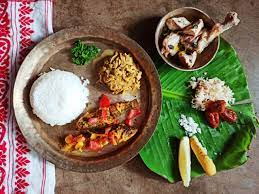
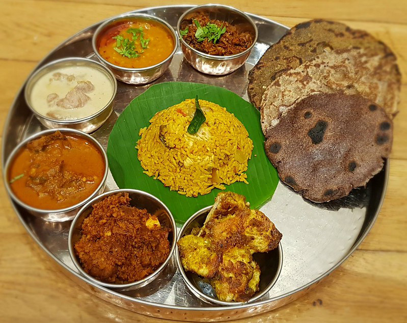
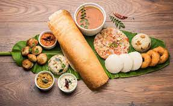

- Punjabi cuisine has a rich tradition of many distinct and local ways of cooking.
- The meals are abundant of local and seasonal vegetables usually sauteed with spices such as cumin, dried coriander, red chili powder, turmeric, black cloves, etc.
- Masala chai is a much-liked drink and is consumed in everyday life and at special occasions.
- Certain dishes exclusive to Punjab, such as makki di roti and sarson da saag, dal makhani, and others are a enjoyed by many throughout the world.
- Tandoori food is a Punjabi specialty.
- Dishes like Bhatti da murgh also known as tandoori chicken, Chicken hariyali kabab, Achari paneer tikka, and Amritsari kulcha are some popular tandoori foods from Punjab.
- Dairy products are regularly enjoyed and usually accompany main meals in the form of dahi, milk, and milk-derived products like lassi, paneer, and more.


- Assamese cuisine is a mixture of different indigenous styles, with a considerable number of regional variations.
- Although it is known for its limited use of spices, Assamese cuisine has strong flavours from its use of delicious herbs, fruits, and vegetables served fresh, dried, or fermented.
- Rice is the staple food item. Fish, generally freshwater varieties, are widely eaten. Other non-vegetarian items include chicken, duck, snails, silkworms, insects, goat, pork, venison, turtle, monitor lizard, etc.
- The region's cuisine involves simple cooking processes like barbecuing and steaming.
- Bhuna, the gentle frying of spices before the addition of the main ingredients, generally common in Indian cooking, is absent in the cuisine of Assam.
- A traditional meal in Assam begins with a khar and ends with a tenga, a sour dish. Homebrewed rice beer or rice wine is served before a meal. A Paan generally concludes a meal.

- Maharashtrian cuisine is an extensive balance of many different tastes. It includes a range of dishes from mild to very spicy tastes.
- Bajri, wheat, rice, jowar, vegetables, lentils, and fruit form important components of the Maharashtrian diet.
- Popular dishes include puran poli, ukdiche modak, batata wada, sabudana ni khichdi, masala bhat, pav bhaji, and wada pav.
- Poha or flattened rice is also usually eaten at breakfast. Kanda poha and aloo poha are some of the dishes cooked for breakfast and snacking in evenings.
- Popular spicy meat dishes include many whih have originated in the Kolhapur region. These are the Kolhapuri Sukka mutton, pandhra rassa, and tabmda rassa.
- Shrikhand, a sweet dish made from strained yogurt, is the main dessert of Maharashtrian cuisine.

- Kerala cuisine offers a multitude of both vegetarian and non-vegetarian dishes.
- Chillies, curry leaves, coconut, mustard seeds, turmeric, tamarind, asafoetida and other spices are often in the preparation.
- A huge variety of spices are used in preparation. This has led Kerala to be known as the Land of Spices.
- One of the traditional Kerala dishes is vegetarian and is called the Kerala sadhya, which is an elaborate banquet prepared for festivals and ceremonies.
- Kerala has a variety of delicious dishes like idli, dosa, appam, idiyappam, puttu, and pathiri.
- These dishes have their own sub-varieties of dishes such as Masala Dosa, Rava Dosa, etc.
- These dishes are enjoyed by all with Sambhar and an assortment of Chutneys.